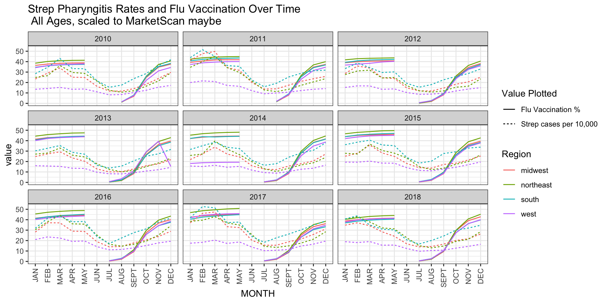
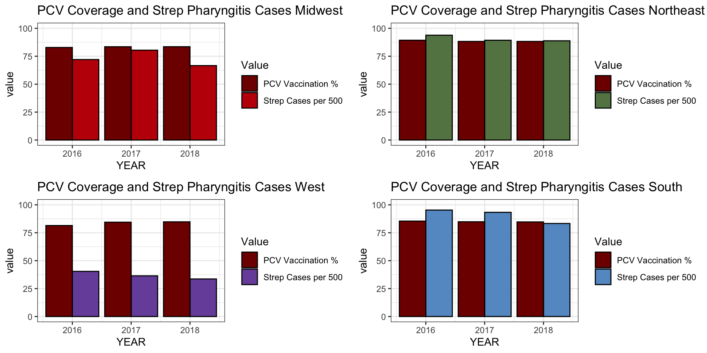

Mapping
Maddy Kline
As a first step in my analysis, I will do a descriptive analysis
looking at case rates of streptococcal pharyngitis across states in the
US over time.

From this plot, we can see that that, across all age groups, cases of strep pharyngitis are much higher in states like Texas, Oklahoma, Mississippi, Tennessee and Kentucky have higher case rates, especially in more recent years (2016, 2017, 2018), and states in the Pacific Northwest such as California, Oregon, Washington, Montana and North Dakota, have lower case rates.
We can look at how case rates trend by age group over time.

From these plots, we can see that the cases of streptococcal pharyngitis are highest in the 5-9 year old age group, as previously explained, and that there are relatively few cases in the older age groups, but cases persist at a low level across the country in the older age groups.
How closely do these trends track with flu data? We can obtain the same data from MarketScan for flu data, using ICD codes: ICD9 4870, 4871, 7878, ICD10: J100, J101, J108, J110, J111, and J118.
Here, we see similar regional trends play out, with a similar early fall divergence in the South compared to the other states. We could consider a situation in which people who have flu are more likely to get a secondary bacterial infection with streptococcus, or that the factors driving an increase in flu in the South are the same as the factors driving the increase in streptococcal pharyngitis. Will will consider flu cases in our statistical model of streptococcal pharyngitis cases.
If flu drives cases of streptococcal pharyngitis, it would also be useful to look at how trends in flu vaccination map to cases of streptococcal pharyngitis. We obtain flu vaccination from the CDC website FluVaxView [5].

Here we see that flu vaccination rates are generally not especially high; ranging from 30-70% by November. Some states, especially in the Midwest, seem to have consistently higher flu vaccination than others, like Florida.

Data on flu vaccination starts in a given year in July, and is collected through May, then restarts in July again. We can compare flu vaccination coverage to streptococcal pharyngitis cases in all ages vs in just the 5-9 age group, which is the highest prevalence age group, as seen above. While in general, the Northeast has high rates of vaccination, and the other regions cluster pretty closely, there are a few examples of flu vaccination being lower in the South, particularly in the 2016-2017 and 2017-2018 flu seasons in all ages, although this does not seem to be the case in the 5-9 age group , where overall vaccination rates are generally higher.
There is some evidence that the PCV vaccinate (against Streptococcus pneumoniae) can prevent early cases of otitis media, infection of the middle ear that can be caused by pneumococcus or other pathogens [6][7]. We are also interested in whether vaccination with PCV is protective against streptococcal pharyngitis. Data on PCV vaccination were obtained from CDC ChildVaxView [8]. The CDC currently recommends that children receive 4 doses of either PCV13 or PCV15 at 2 months, 4 months, 6 months, and 12-15 months old. Children who miss doses are recommended to follow catch-up guidelines to receive their vaccinations [9]. The CDC reports this vaccination data by birth cohort from 2011-2018. Here we use data on whether children received all 4 PCV vaccinations by the age of 35 months. We use the birth cohorts from 2011, 2012, and 2013 to compare to flu and streptococcal pharyngitis cases occurring in 2016, 2017, and 2018 in those in the 5-9 age group.

These data show generally high vaccination (>75% universally), with some variation from year to year as to which states have the highest coverage. We can group these birth cohorts to plot onto our case count data from streptococcal pharyngitis and flu by including the 2011 birth cohort vaccination status for 5-9 year olds in the year 2016, 2011 and 2012 for 5-9 year olds in 2017, and 2011, 2012, and 2013 for 2018.
 PCV coverage is pretty high across the regions in these years, and no clear trends jump out ofthis visualization. However, there are some variations from year to year in both cases and vaccination. For example, PCV vaccination appears to increase in the West over these 3 years, and cases of streptococcal pharyngitis go down.
##Appendix
knitr::opts_chunk$set(echo = TRUE)
library(tidyverse)
library(stringr)
library(ggplot2)
library(usmap)
library(gridExtra)
library(maps)
library(mapdata)
library(ggmap)
library(lmtest)
#Read in data on cases
dat <- read_csv("/Users/madeleinekline/Dropbox (Harvard University)/G1/GradLab/StrepPharyngitis/output/GeoVisits.csv")
#Read in data on membership
coh <- read_csv("/Users/madeleinekline/Dropbox (Harvard University)/G1/GradLab/StrepPharyngitis/output/GeoCohort.csv")
#this dataframe has population by sex, age group, and state but not by month. So need to add it to the other dataframe once already collapsed by year.
#get data by year, rather than by month:
by_year <- aggregate(NVISITS ~ YEAR + STATE + SEX + AGEGRP + PRIMARYCOND, dat, sum)
#we can then join this with the population data from cohort
by_year <- left_join(by_year, coh)
# by_year |> group_by(YEAR) |> summarize(total_vis = sum(NVISITS), total_memb = sum(NMEMB), CI = round(total_vis/total_memb,4)) |> ggplot(aes(x=YEAR, y = CI)) + geom_bar(stat = "identity", fill = "steelblue") + theme_bw() + geom_text(aes(label=CI), vjust=1.6, color="white", size=2.0) + ylab("Cases per person") + ggtitle("Total Strep Pharyngitis Visits per Member by Year US")
#let's summarize cumulative incidence by state across years to start
by_state <- by_year |>
group_by(YEAR, STATE) |>
summarize(visits = sum(NVISITS), members = sum(NMEMB), CI = visits/members)
#we now manipulate the data slightly to show CI per hundred, and make the state names match the mapping dataframe
strep_all <- by_state |> mutate(region = tolower(STATE), CI_per_hundred = CI*100) |>
select(region, CI_per_hundred)
#now we add region designations for "northeast", "south", "midwest", and "west"
#add regions to this dataframe
#make a function that converts lists of state abbreviations to lists of state names
to_statename <- function(list){
new_list <- c()
for(i in 1:length(list)){
name <- state.name[grep(list[i], state.abb)]
new_list <- append(new_list, name)
}
new_list
}
northeast_states <- tolower(to_statename(.northeast_region))
midwest_states <- tolower(to_statename(.midwest_region))
south_states <- tolower(to_statename(.south_region))
west_states <- tolower(to_statename(.west_region))
northeast_df <- data.frame(region = northeast_states, part = "northeast")
midwest_df <- data.frame(region = midwest_states, part = "midwest")
south_df <- data.frame(region = south_states, part = "south")
west_df <- data.frame(region = west_states, part = "west")
#will put dc in the south because maryland and viriginia are
dc_df <- data.frame(region = "washington dc", part = "south")
state_parts <- rbind(northeast_df, midwest_df, south_df, west_df, dc_df)
strep_all_region <- left_join(strep_all, state_parts, by = "region")
#now we look at the data by age group across all regions
by_year <- by_year |> mutate("state" = STATE)
by_year_age_visits <- aggregate(NVISITS ~ YEAR + state + AGEGRP + PRIMARYCOND, dat = by_year, sum)
by_year_age_membs <- aggregate(NMEMB ~ YEAR + state + AGEGRP + PRIMARYCOND, dat = by_year, sum)
by_year_age <- left_join(by_year_age_visits, by_year_age_membs)
by_year_age <- by_year_age |> mutate(CI_per_hundred = NVISITS/NMEMB *100, state = tolower(state))
#add in region just in case?
state_parts_2 <- state_parts
names(state_parts_2)[1] <- "state"
by_year_age <- left_join(by_year_age, state_parts_2)
#make a plot of trends over time by state
country_by_age <- left_join(aggregate(NVISITS ~ AGEGRP + YEAR, dat = by_year_age, sum), aggregate(NMEMB ~ AGEGRP + YEAR, dat = by_year_age, sum))
country_by_age <- country_by_age |> mutate(CI_per_hundred = NVISITS/NMEMB * 100)
# country_by_age |> ggplot(aes(YEAR, CI_per_hundred, group = AGEGRP)) + geom_line(aes(color = AGEGRP)) + ggtitle("Streptococcal Pharyngitis in the US from 2010-2018 \n By Age Group") + theme_bw() + ylab("Cases per 100 People") + labs(color = "Age Group")
states_indiv_region <- strep_all_region |> group_by(YEAR, region) |> ggplot(aes(YEAR, CI_per_hundred, group=region)) + geom_line(aes(col = part)) + ggtitle("Streptococcal Pharyngitis In All States by Region") + ylab("Cases per 100 People") + theme_bw() + labs(color = "Region")
#now group them by region and just report 1 value per region
by_state_2 <- by_state |> mutate(state = tolower(STATE))
strep_region_visits <- left_join(by_state_2, state_parts_2, by = "state")
strep_region_visits_agg <- aggregate(visits~ part + YEAR, dat = strep_region_visits, sum)
strep_region_members_agg <- aggregate(members~ part + YEAR, dat = strep_region_visits, sum)
strep_region_joined <- left_join(strep_region_visits_agg, strep_region_members_agg)
strep_region_joined <- strep_region_joined |> mutate(CI_per_hundred = visits/members * 100)
per_region<- strep_region_joined |> group_by(YEAR, part) |> ggplot(aes(YEAR, CI_per_hundred, group=part)) + geom_line(aes(col = part)) + ggtitle("Streptococcal Pharyngitis By Region") +ylab("Cases per 100 People") + theme_bw() + labs(color = "Region")
#grid.arrange(states_indiv_region, per_region, ncol=2)
#try by month; first just plot data by region for all age groups together
#should be able to just merge these two because the members are stable over the year
by_month_all <- left_join(dat, coh)
#consolidate across sex and check if this is what you needed to do earlier on as well;
#to consolidate across sex, will just need to add so that should be fine
by_month_age_vis <- aggregate(NVISITS ~ MONTH + STATE + AGEGRP + YEAR, dat = by_month_all, sum)
memb_no_sex <- aggregate(NMEMB ~ STATE +AGEGRP + YEAR, dat = coh, sum)
by_month_no_sex <- left_join(by_month_age_vis, memb_no_sex)
by_month_no_sex <- by_month_no_sex |> mutate("CI_per_thousand" = NVISITS/NMEMB*1000)
by_month_no_sex_lowercase <- by_month_no_sex |> mutate("state" = tolower(STATE))
by_month_regions <- left_join(by_month_no_sex_lowercase, state_parts_2, by = "state")
by_month_regions_only_vis <- aggregate(NVISITS ~ part + YEAR + MONTH,
dat = by_month_regions,
sum)
by_month_regions_only_memb <- aggregate(NMEMB ~ part + YEAR + MONTH,
dat = by_month_regions,
sum)
by_month_regions_only <- left_join(by_month_regions_only_vis, by_month_regions_only_memb)
by_month_regions_only <- by_month_regions_only |> mutate("CI_per_thousand" = NVISITS/NMEMB *1000)
# by_month_regions_only |> ggplot(aes(x = MONTH, y = CI_per_thousand, group = part)) +
# geom_line(aes(color = part)) +
# facet_wrap(~YEAR) + ggtitle("Steptococcal Pharyngitis Cases Incidence by Month \n All Ages, by Region") + labs(color = "Region") + ylab("Cases per 1,000 People") +scale_x_discrete(limits = c("JAN", "FEB", "MAR", "APR", "MAY", "JUN", "JUL", "AUG", "SEPT",
# "OCT", "NOV", "DEC")) + theme(axis.text.x = element_text(angle = 90, vjust = 0.5, hjust=1))
#we now load in US mapping data from the maps package
us_df <- map_data("state")
#this creates a base US map to build upon
us_base <- ggplot(data = us_df, mapping = aes(x = long, y = lat, group =group))+
coord_fixed(1.3) + geom_polygon(color="black", fill = "gray")
#we join our dataframe with strep info with our mapping dataframe
us_strep_all <- inner_join(us_df, strep_all, by = "region")
us_strep_rates_over_time <- us_base + geom_polygon(data = us_strep_all, aes(fill = CI_per_hundred))+
geom_polygon(color = "gray", fill = NA) + theme(
axis.text = element_blank(),
axis.line = element_blank(),
axis.ticks = element_blank(),
panel.border = element_blank(),
panel.grid = element_blank(),
axis.title = element_blank()
) + facet_wrap(~YEAR) + scale_fill_gradient(low = "#FFFFFF", high = "#FF0000" ) + ggtitle("Cumulative Incidence of Streptococcal Pharyngitis from 2010-2018 \n All Ages") + labs(fill = "Cases per 100 People")
us_strep_rates_over_time
#making maps for age group trends over time
by_year_age_formap <- by_year_age
names(by_year_age_formap)[2] = "region"
us_strep_byage_map <- inner_join(us_df, by_year_age_formap, by = "region")
#attempt facet_grid with year as the column and age group as the row
us_strep_byage_map_gg <- us_base +
geom_polygon(data = us_strep_byage_map, aes(fill = CI_per_hundred)) +
geom_polygon(color = "gray", fill = NA) +
theme(
axis.text = element_blank(),
axis.line = element_blank(),
axis.ticks = element_blank(),
panel.border = element_blank(),
panel.grid = element_blank(),
axis.title = element_blank()
) + scale_fill_gradient(low = "#FFFFFF", high = "#FF0000" ) + ggtitle("Cumulative Incidence of Streptococcal Pharyngitis from 2010-2018 \n By Age Group") + labs(fill = "Cases per 100 People")
us_strep_byage_map_gg + facet_grid(rows = vars(AGEGRP), cols = vars(YEAR) )
#now for flu case data
flu_dat <- read_csv("/Users/madeleinekline/Dropbox (Harvard University)/G1/GradLab/StrepPharyngitis/output/GeoVisitsFlu.CSV")
flu_coh <- read_csv("/Users/madeleinekline/Dropbox (Harvard University)/G1/GradLab/StrepPharyngitis/output/GeoCohortFlu.csv") #this is the same as strep data
#do same thing that did for strep cases to start
#should be able to just merge these two because the members are stable over the year
by_month_all_flu <- left_join(flu_dat, flu_coh)
flu_by_month_age_vis <- aggregate(NVISITS ~ MONTH + STATE + AGEGRP + YEAR, dat = by_month_all_flu, sum)
flu_memb_no_sex <- aggregate(NMEMB ~ STATE +AGEGRP + YEAR, dat = flu_coh, sum)
flu_by_month_no_sex <- left_join(flu_by_month_age_vis, flu_memb_no_sex)
flu_by_month_no_sex <- flu_by_month_no_sex |>
mutate("CI_per_thousand" = NVISITS/NMEMB*1000) |>
mutate("CI_per_ten_thousand" =NVISITS/NMEMB*10000 )
flu_by_month_no_sex_lowercase <- flu_by_month_no_sex |> mutate("state" = tolower(STATE))
flu_by_month_regions <- left_join(flu_by_month_no_sex_lowercase, state_parts_2, by = "state")
flu_by_month_regions_only_vis <- aggregate(NVISITS ~ part + YEAR + MONTH,
dat = flu_by_month_regions,
sum)
flu_by_month_regions_only_memb <- aggregate(NMEMB ~ part + YEAR + MONTH,
dat = flu_by_month_regions,
sum)
flu_by_month_regions_only <- left_join(flu_by_month_regions_only_vis, flu_by_month_regions_only_memb)
flu_by_month_regions_only <- flu_by_month_regions_only |> mutate("CI_per_thousand" = NVISITS/NMEMB *1000,
"CI_per_ten_thousand" = NVISITS/NMEMB *10000,
"CI_per_hundred_thousand" = NVISITS/NMEMB *100000)
flu_by_month_regions_only |> ggplot(aes(x = MONTH, y = CI_per_thousand, group = part)) +
geom_line(aes(color = part)) + scale_y_continuous(trans = "log10") +
facet_wrap(~YEAR) + scale_x_discrete(limits = c("JAN", "FEB", "MAR", "APR", "MAY", "JUN", "JUL", "AUG", "SEPT",
"OCT", "NOV", "DEC")) + theme(axis.text.x = element_text(angle = 90, vjust = 0.5, hjust=1)) + ggtitle("Flu Cases Over Time \n All Ages")
#need to figure out where data is missing
flu_vax <- read_csv("/Users/madeleinekline/Dropbox (Harvard University)/G1/GradLab/flu_data/Influenza_Vaccination_Coverage_for_All_Ages__6__Months_.csv")
flu_vax_filt <- flu_vax |>
filter(`Season/Survey Year` %in% c("2009-10", "2010-11", "2011-12",
"2012-13", "2013-14", "2014-15",
"2015-16", "2016-17", "2017-18",
"2018-19")) |>
filter(Dimension %in% c("≥6 Months","6 Months - 17 Years", "≥18 Years" , "6 Months - 4 Years" ,
"5-12 Years", "13-17 Years")) |>
mutate(state = tolower(Geography)) |>
filter(state %in% state_parts_2$state) |>
select(-`Geography Type`, -Vaccine, -FIPS, -`Dimension Type`)
#need to put the years on the same year scale as the cases data
flu_vax_filt <- flu_vax_filt |> mutate(year_lower = substr(`Season/Survey Year`, 1,4),
year_higher = paste0("20",str_sub(`Season/Survey Year`, -2, -1)),
year = ifelse(Month %in% c(7,8,9,10,11,12), year_lower,
ifelse(Month %in% c(1,2,3,4,5), year_higher, NA)),
state = tolower(Geography),
coverage = as.numeric(`Estimate (%)`))
#add region to this
flu_vax_filt <- left_join(flu_vax_filt, state_parts_2, by= "state")
flu_vax_filt_2 <- flu_vax_filt |> mutate(STATE = Geography, YEAR = as.numeric(year)) |>
select(Month, STATE, Dimension, `Estimate (%)`,YEAR, part) |> filter(YEAR != 2009)
#for the sake of the geographic analysis, I will show flu vaccination rates in 5-9 year olds by november of each year in each state
fluvax_map <- flu_vax_filt_2 |>
filter(Dimension == "5-12 Years", Month == 11 ) |>
mutate(region = tolower(STATE)) |>
left_join(us_df)
us_base + geom_polygon(data = fluvax_map, aes(fill = as.numeric(`Estimate (%)`)))+
geom_polygon(color = "gray", fill = NA) + theme(
axis.text = element_blank(),
axis.line = element_blank(),
axis.ticks = element_blank(),
panel.border = element_blank(),
panel.grid = element_blank(),
axis.title = element_blank()
) + facet_wrap(~YEAR) + scale_fill_gradient(low = "#FFFFFF", high = "#F05E16" ) + ggtitle("November Flu Vaccination Coverage")
fluvax_map$YEAR
#now take >6 months, which is vaccination in all ages. Do 5-12 separately
flu_vax_filt_allages <- flu_vax_filt_2 |> filter(Dimension == "≥6 Months")
#get the cohort membership by state from the original dataframe
coh_fluvax_allages <- aggregate(NMEMB ~ STATE + YEAR, data = coh, sum)
flu_vax_rescale_allages <- left_join(flu_vax_filt_allages, coh_fluvax_allages) |>
mutate(sample_vaxxed = as.numeric(`Estimate (%)`)*1/100*NMEMB)
#aggregate the members and sample vaxxed
flu_vax_rescale_allages_memb <- aggregate(NMEMB ~ part + YEAR + Month, data = flu_vax_rescale_allages, sum)
flu_vax_rescale_allages_vax <- aggregate(sample_vaxxed ~ part + YEAR + Month, data = flu_vax_rescale_allages, sum)
flu_vax_rescale_allages_comb <- left_join(flu_vax_rescale_allages_vax, flu_vax_rescale_allages_memb) |> mutate(flu_coverage = sample_vaxxed / NMEMB* 100)
#aggregate(NMEMB ~ STATE + YEAR, data = by_month_regions, sum)
#aggregate(NMEMB ~ STATE + YEAR, data = flu_by_month_regions, sum)
#these are different by a factor of 12, which makes sense because in one case I am summing over all the months.
#I think this is still what I want, but need to check with stephen. Shouldn't affect scaling though cuz its just off by a factor of 12 which will come out regardless
#do the same thing for the 5-9 age group
flu_vax_filt_512 <- flu_vax_filt_2 |> filter(Dimension == "5-12 Years")
coh_fluvax_59 <- aggregate(NMEMB~ STATE + YEAR + AGEGRP, data = coh, sum) |> filter(AGEGRP == "05_09")
flu_vax_rescale_5 <- left_join(flu_vax_filt_512, coh_fluvax_59) |> mutate(sample_vaxxed = as.numeric(`Estimate (%)`)*1/100*NMEMB)
flu_vax_rescale_5_memb <- aggregate(NMEMB ~ part + YEAR + Month, data = flu_vax_rescale_5, sum)
flu_vax_rescale_5_vax <- aggregate(sample_vaxxed ~ part + YEAR + Month, data = flu_vax_rescale_5, sum)
flu_vax_rescale_5_comb <- left_join(flu_vax_rescale_5_memb, flu_vax_rescale_5_vax) |>
mutate(flu_coverage = sample_vaxxed / NMEMB * 100)
#plot the strep and flu vaccine data ontop of one another for all ages, and for 5-9 age group specifically
flu_vax_rescale_allages_comb <- flu_vax_rescale_allages_comb |> mutate(MONTH = Month) |> select(-Month)
joint2 <- by_month_regions_only |> select(-NVISITS, -NMEMB) |> left_join(flu_vax_rescale_allages_comb) |>
select(-sample_vaxxed, -NMEMB) |> mutate(Strep_CI_per_ten_thousand = CI_per_thousand*10)
joint2_pivot <- joint2|> pivot_longer(cols = c("Strep_CI_per_ten_thousand", "flu_coverage"))
fluvax_strep_allages_plot <- joint2_pivot |> ggplot(aes(x= MONTH, y = value, color = part)) +
geom_line(aes(linetype = name)) +
facet_wrap(~YEAR) + scale_x_discrete(limits = c("JAN", "FEB", "MAR", "APR", "MAY", "JUN", "JUL", "AUG", "SEPT",
"OCT", "NOV", "DEC")) + theme(axis.text.x = element_text(angle = 90, vjust = 0.5, hjust=1)) + ggtitle("Strep Pharyngitis Rates and Flu Vaccination Over Time \n All Ages, scaled to MarketScan maybe") + labs(linetype = "Value Plotted") + labs(color = "Region") + scale_linetype_discrete(labels = c("Flu Vaccination %", "Strep cases per 10,000"))
#for 5-9 age group
by_month_regions_5 <- by_month_regions |> filter(AGEGRP %in% c("05_09"))
by_month_regions_5_vis <- aggregate(NVISITS ~ part + YEAR + MONTH,
dat = by_month_regions_5,
sum)
by_month_regions_5_memb <- aggregate(NMEMB ~ part + YEAR + MONTH,
dat = by_month_regions_5,
sum)
by_month_regions_5 <- left_join(by_month_regions_5_vis, by_month_regions_5_memb)
by_month_regions_5 <- by_month_regions_5 |> mutate("CI_per_thousand" = NVISITS/NMEMB *1000)
#fluvax data
flu_vax_rescale_5_comb <- flu_vax_rescale_5_comb |> mutate(MONTH = Month) |> select(-Month)
joint3 <- by_month_regions_5 |> select(-NVISITS, -NMEMB) |> left_join(flu_vax_rescale_5_comb) |>
select(-sample_vaxxed, -NMEMB) |> mutate(Strep_CI_per_ten_thousand = CI_per_thousand*10, Strep_CI_per_five_thousand = CI_per_thousand*5, Strep_CI_per_two_thousand = CI_per_thousand*2)
joint3_pivot <- joint3 |> pivot_longer(cols = c("Strep_CI_per_two_thousand", "flu_coverage"))
fluvax_strep_59_plot <- joint3_pivot |> ggplot(aes(x= MONTH, y = value, color = part)) +
geom_line(aes(linetype = name)) +
facet_wrap(~YEAR) + scale_x_discrete(limits = c("JAN", "FEB", "MAR", "APR", "MAY", "JUN", "JUL", "AUG", "SEPT",
"OCT", "NOV", "DEC")) + theme(axis.text.x = element_text(angle = 90, vjust = 0.5, hjust=1)) + ggtitle("Strep Pharyngitis Rates and Flu Vaccination Over Time \n 5-9 Age Group") + labs(linetype = "Value Plotted") + labs(color = "Region") + scale_linetype_discrete(labels = c("Flu Vaccination %", "Strep cases per 2,000"))
fluvax_strep_allages_plot
fluvax_strep_59_plot
childvax_data <- read_csv("/Users/madeleinekline/Dropbox (Harvard University)/G1/GradLab/vax_data/Vaccination_Coverage_among_Young_Children__0-35_Months_.csv")
pcv_vax <- childvax_data |> filter(Vaccine == "PCV")
pcv_4d_35m <- pcv_vax |> filter(Dose == "≥4 Doses") |> filter(Dimension == "35 Months")
pcv_4d_35m <- pcv_4d_35m |> filter(`Birth Year/Birth Cohort` %in% c('2011', '2012', '2013',
'2014', '2015', '2016', '2017', '2018')) |>
mutate(year = as.numeric(`Birth Year/Birth Cohort`), region = tolower(Geography))
pcv_map <- pcv_4d_35m |> filter(year %in% c(2011,2012,2013)) |> left_join(us_df)
pcv_over_time_4d35m <- us_base + geom_polygon(data = pcv_map, aes(fill = `Estimate (%)`))+
geom_polygon(color = "gray", fill = NA) + theme(
axis.text = element_blank(),
axis.line = element_blank(),
axis.ticks = element_blank(),
panel.border = element_blank(),
panel.grid = element_blank(),
axis.title = element_blank()
) + facet_wrap(~year) + scale_fill_gradient(low = "#FFFFFF", high = "#800000" ) + ggtitle("PCV Vaccination by 35 months by birth cohort")
pcv_over_time_4d35m
pcv_grouping <- pcv_4d_35m |> filter(`Birth Year/Birth Cohort` %in% c("2011", "2012", "2013")) |>
mutate(STATE = Geography, YEAR = as.numeric(`Birth Year/Birth Cohort`)) |>
select(Vaccine, STATE, `Estimate (%)`, YEAR, `Sample Size`)
pcv_memb_ag <- coh |> filter(YEAR %in% c("2011", "2012", "2013"), AGEGRP == "00_04")
pcv_memb_ag <- aggregate(NMEMB ~ STATE + AGEGRP + YEAR, dat = pcv_memb_ag, sum)
pcv_memb_ag <- pcv_memb_ag |> mutate(YEAR = as.numeric(YEAR))
pcv_grouped <- left_join(pcv_grouping, pcv_memb_ag)
pcv_grouped <- pcv_grouped |> mutate(sample_vaxxed = `Estimate (%)`*0.01 *NMEMB)
pcv_grouped <- pcv_grouped |> mutate(state = tolower(STATE))
pcv_grouped <- left_join(pcv_grouped, state_parts_2)
pcv_grouped_2016 <- pcv_grouped |> filter(YEAR == 2011) |> na.omit() #NAs are for regions that aren't states; ok to omit
pcv_grouped_2017 <- pcv_grouped |> filter(YEAR %in% c(2011, 2012)) |> na.omit()
pcv_grouped_2018 <- pcv_grouped |> na.omit()
pcv_grouped_2016_vaxxed <- aggregate(sample_vaxxed ~ part, data = pcv_grouped_2016, sum)
pcv_grouped_2016_memb <- aggregate(NMEMB ~ part, data = pcv_grouped_2016, sum)
pcv_2016_ag_region <- left_join(pcv_grouped_2016_memb, pcv_grouped_2016_vaxxed) |> mutate(pcv_coverage = sample_vaxxed / NMEMB * 100, YEAR = 2016)
pcv_grouped_2017_vaxxed <- aggregate(sample_vaxxed ~ part, data = pcv_grouped_2017, sum)
pcv_grouped_2017_memb <- aggregate(NMEMB ~part, data = pcv_grouped_2017, sum)
pcv_2017_ag_region <- left_join(pcv_grouped_2017_memb, pcv_grouped_2017_vaxxed) |> mutate(pcv_coverage = sample_vaxxed / NMEMB * 100, YEAR = 2017)
pcv_grouped_2018_vaxxed <- aggregate(sample_vaxxed ~ part, data = pcv_grouped_2018, sum)
pcv_grouped_2018_memb <- aggregate(NMEMB ~part, data = pcv_grouped_2018, sum)
pcv_2018_ag_region <- left_join(pcv_grouped_2018_memb, pcv_grouped_2018_vaxxed) |> mutate(pcv_coverage = sample_vaxxed / NMEMB * 100, YEAR = 2018)
all_pcv <- rbind(pcv_2016_ag_region, pcv_2017_ag_region, pcv_2018_ag_region) |> select(part, pcv_coverage, YEAR) #coverage for 5-9 year olds
#plot it ontop of strep cases
#look by region over time by age group
by_year_age_region_visits <- aggregate(NVISITS ~ part + AGEGRP + PRIMARYCOND + YEAR, dat = by_year_age, sum)
by_year_age_region_members <- aggregate(NMEMB ~ part + AGEGRP + PRIMARYCOND + YEAR, dat = by_year_age, sum)
by_year_age_region <- left_join(by_year_age_region_visits,by_year_age_region_members)
by_year_age_region <- by_year_age_region |> mutate(CI_per_hundred = NVISITS/NMEMB*100)
strep_for_pcv <- by_year_age_region |> filter(AGEGRP == "05_09", YEAR %in% c(2016, 2017, 2018)) |>
mutate(Strep_CI_per_hundred = CI_per_hundred) |> select(part, YEAR, Strep_CI_per_hundred)
strep_pcv <- left_join(strep_for_pcv, all_pcv) |> mutate(Strep_CI_per_five_hundred = Strep_CI_per_hundred *5) |>
select(-Strep_CI_per_hundred)
strep_pcv_pivoted <- pivot_longer(strep_pcv, cols = c("Strep_CI_per_five_hundred", "pcv_coverage"))
# strep_pcv_pivoted|>
# ggplot(aes(x= YEAR, y = value, color = part)) +
# geom_line(aes(linetype = name)) + scale_x_discrete(limits = c(2016, 2017, 2018))
#maybe separate by region, do barplots
midwest <- strep_pcv_pivoted |> filter(part == "midwest") |> ggplot(aes(x = YEAR, y = value, fill = name)) + geom_bar(stat = "identity", color = "black", position = position_dodge()) + labs(fill = "Value") + scale_fill_manual(values = c("#800000", "#C21807" ), labels = c("PCV Vaccination %", "Strep Cases per 500")) + ylim(0,100) + ggtitle("PCV Coverage and Strep Pharyngitis Cases Midwest")
northeast <- strep_pcv_pivoted |> filter(part == "northeast") |> ggplot(aes(x = YEAR, y = value, fill = name)) + geom_bar(stat = "identity", color = "black", position = position_dodge()) + labs(fill = "Value") + scale_fill_manual(values = c("#800000", "#658354" ), labels = c("PCV Vaccination %", "Strep Cases per 500")) + ylim(0,100) + ggtitle("PCV Coverage and Strep Pharyngitis Cases Northeast")
west <- strep_pcv_pivoted |> filter(part == "west") |> ggplot(aes(x = YEAR, y = value, fill = name)) + geom_bar(stat = "identity", color = "black", position = position_dodge()) + labs(fill = "Value") + scale_fill_manual(values = c("#800000", "#7852A9" ), labels = c("PCV Vaccination %", "Strep Cases per 500")) + ylim(0,100) + ggtitle("PCV Coverage and Strep Pharyngitis Cases West")
south <- strep_pcv_pivoted |> filter(part == "south") |> ggplot(aes(x = YEAR, y = value, fill = name)) + geom_bar(stat = "identity", color = "black", position = position_dodge()) + labs(fill = "Value") + scale_fill_manual(values = c("#800000", "#6699CC" ), labels = c("PCV Vaccination %", "Strep Cases per 500")) + ylim(0,100) + ggtitle("PCV Coverage and Strep Pharyngitis Cases South")
grid.arrange(midwest, northeast, west, south, ncol = 2, nrow =2)